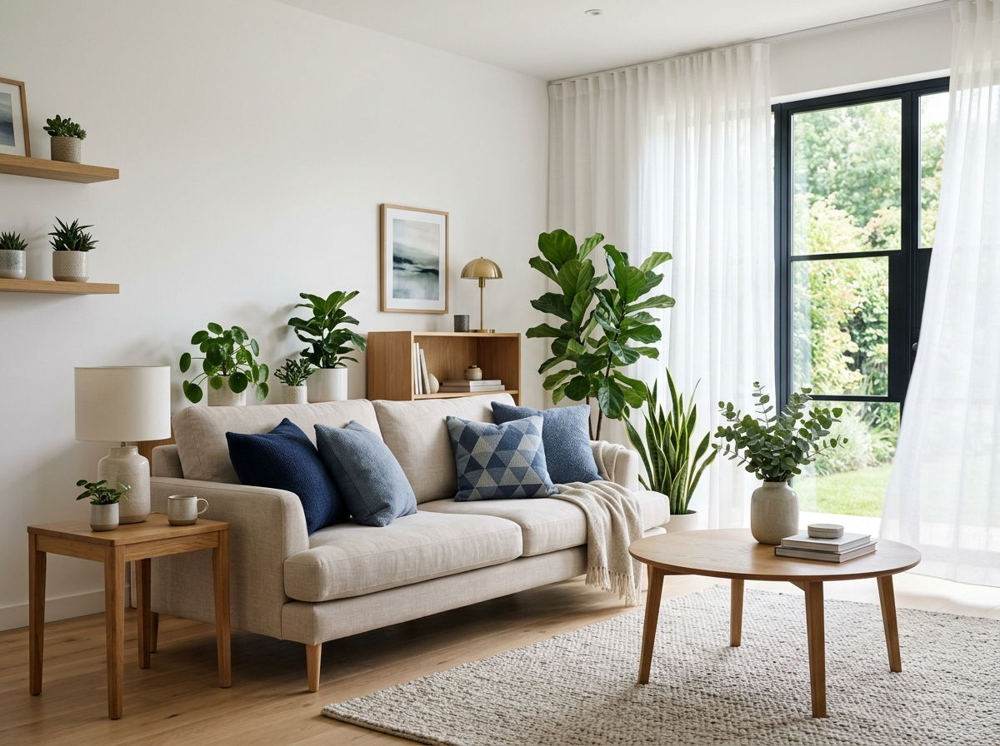
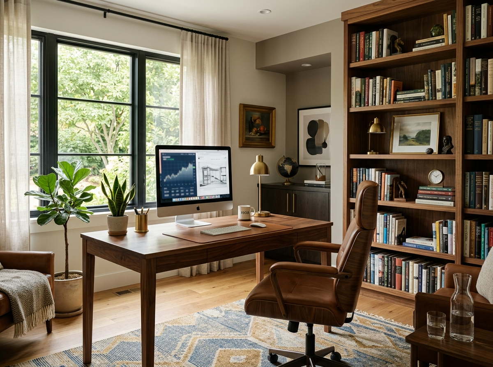
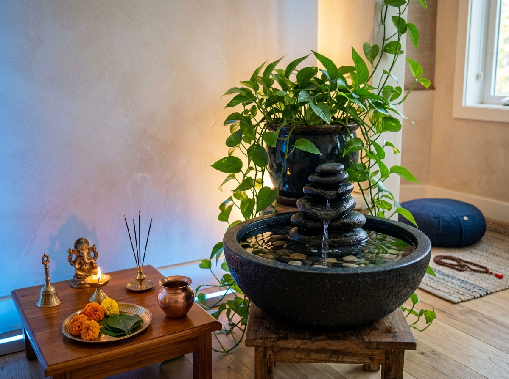
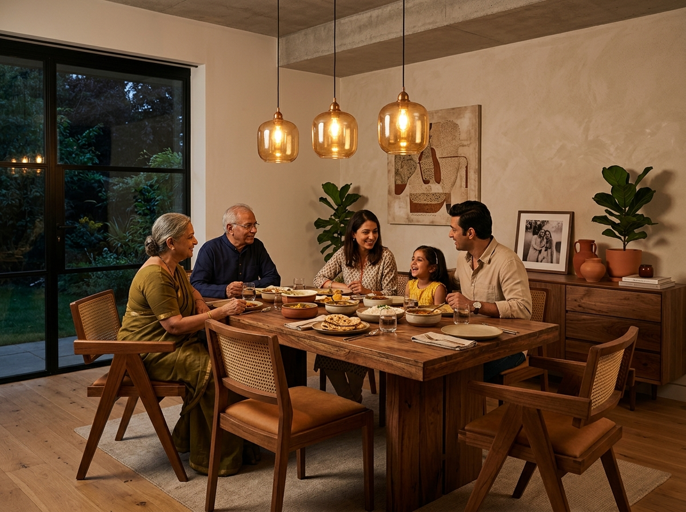
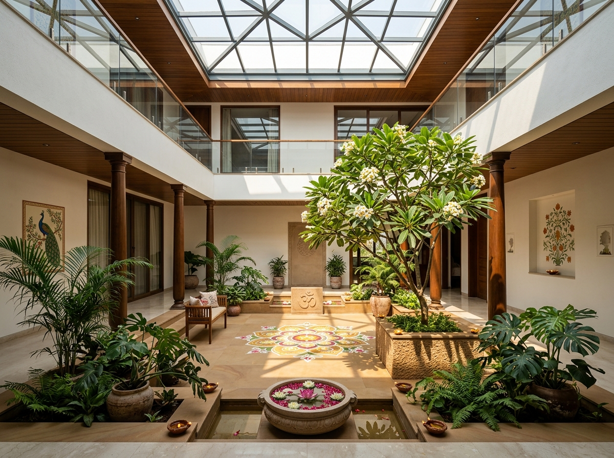
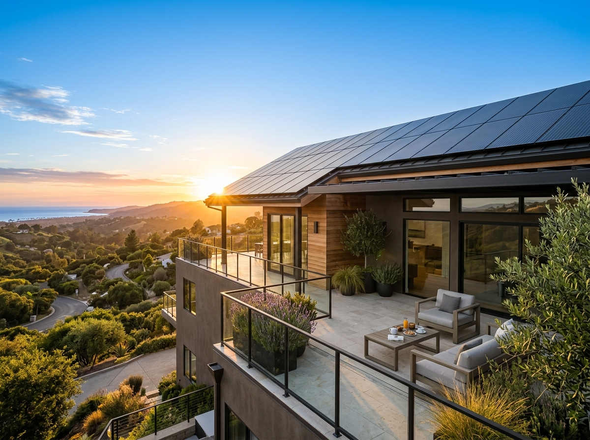
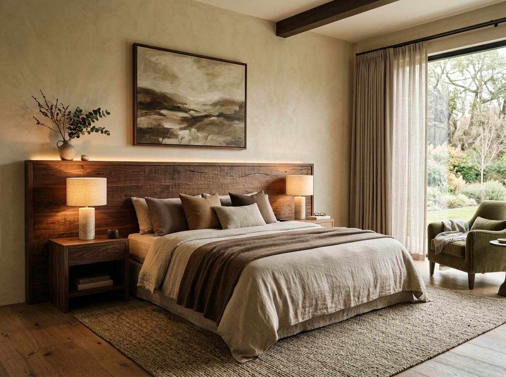
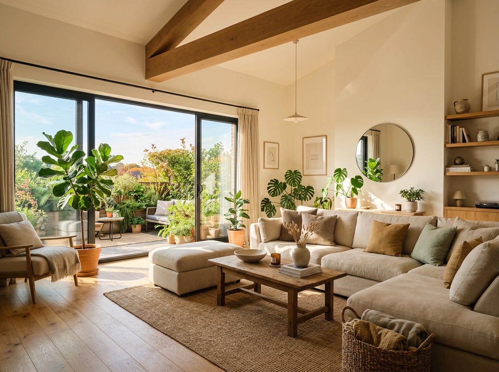
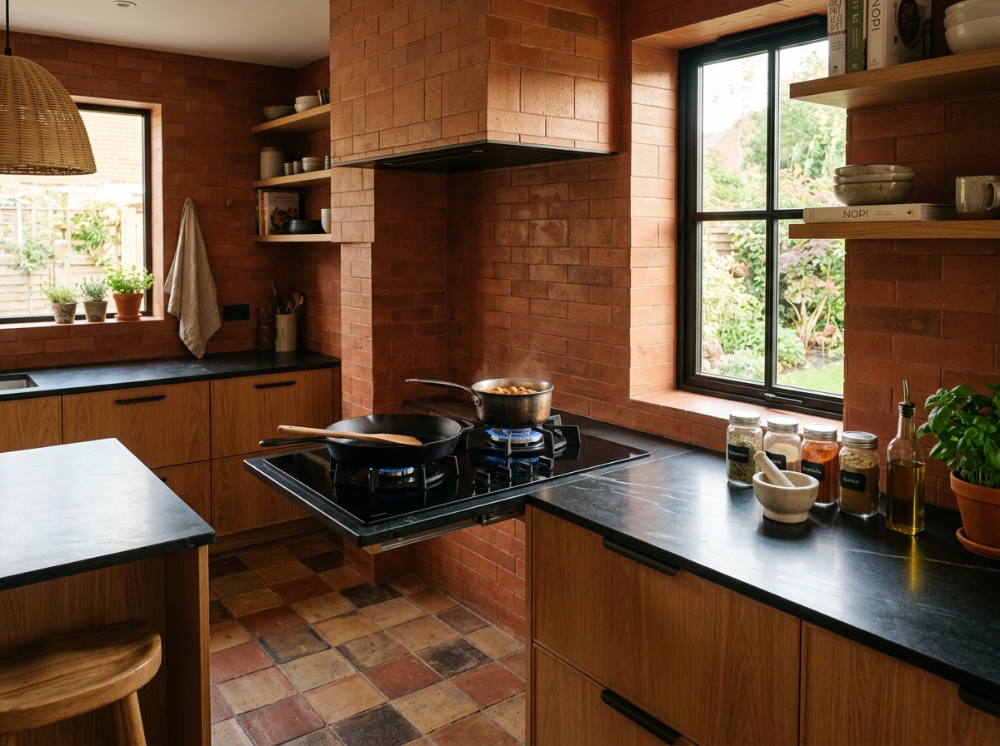

Harmonizing Living Spaces in Bengaluru
Building an independent house, villa, or duplex in Bengaluru—whether on a 30x40 site in Sarjapur, a spacious plot in Yelahanka, or a redevelopment project in Indiranagar—is one of the biggest investments you will ever make. While navigating BBMP approvals, architectural design, and modern spatial planning are top priorities, incorporating Vastu Shastra right from the blueprint phase ensures your home is naturally aligned with cosmic forces.
Given Bengaluru’s unique urban topography, tight plot dimensions, and fast-paced lifestyle, Vastu Shastra acts as an ancient science that harmonizes living spaces with the five core elements (Pancha Bhootas): Earth (Prithvi), Water (Jal), Fire (Agni), Air (Vayu), and Space (Akasha). When structural layout and interior styling align with these energy orientations, your Bengaluru home naturally fosters long-term health, financial prosperity, and peace of mind.
Why Vastu Matters During Early Construction (Not After)
Retrofitting Vastu fixes after construction is complete often requires expensive structural modifications or awkward interior compromises. Integrating Vastu principles right from the blueprint stage allows architectural elements—such as load-bearing walls, plumbing, and room orientations—to align naturally without sacrificing modern aesthetics.
Structural Harmony
Balances physical weight distribution and natural light flow across all floors, creating stable load paths and bright, airy rooms.
Cost Efficiency
Prevents costly demolition or structural alterations after civil work finishes. Zero wasteful rework on plumbing and beams.
Seamless Aesthetics
Blends modern interior functionality smoothly with traditional orientation rules without compromising contemporary minimalism.
9 Vastu Zones for a Healthier, Happier & More Prosperous Life
The right energy in every corner brings harmony, success and well-being to your home and life.









Room-by-Room Vastu Layout & Direction Guide
Adhering to correct room allocations maximizes natural illumination, airflow, and spatial functional balance across every square foot of your Bengaluru home:
| Room / Space | Ideal Direction | Key Vastu Construction Guidelines |
|---|---|---|
| Master Bedroom | South-West | Promotes stability and health. Position the bed headboard toward the East or South to align with the Earth’s magnetic polarity. |
| Kitchen | South-East | Zone of Agni (Fire). Ensure the cooking counter faces East so the cook faces the rising sun. Keep water sink separate to prevent fire-water conflict. |
| Pooja / Meditation | North-East | Zone of spiritual clarity (Ishaanya). Keep light, clean, and completely clutter-free. Maximize morning sun and cross-breezes. |
| Living Room | North or East | Welcomes positive social energy and fresh air. Place heavy sofas and lounge seating in the South or West sections of the room. |
| Bathrooms & W/C | North-West or West | Avoid placing in North-East or South-West. WC units should face strictly along the North-South axis for energetic hygiene. |
| Staircase | South or West | Must ascend in a clockwise direction. Never locate over the central Brahmasthan to maintain structural and spiritual equilibrium. |
Vastu Color Schemes & Interior Finishes
Colors correspond directly to directional elements. Utilizing tailored color palettes enhances environmental energy across individual rooms:
Wisdom & Calm
Light blue, crisp white, and off-white tones for serenity. Refracts pure morning daylight through pooja and study corners.
Energy & Vitality
Soft peach, warm cream, light orange, or coral accents. Stimulates metabolic fire (Jataragni) and warmth in culinary spaces.
Stability & Strength
Rich earthy tones, beige, warm taupe, and subtle light brown. Anchors psychological rest and deep, grounded sleep in master suites.
Growth & Wealth
Shades of sage green and sea blue to stimulate business opportunities, communication, and financial upward mobility.
Critical Vastu Pitfalls to Avoid in Bengaluru Construction
In compact urban construction projects (like 30x40 or 40x60 plot developments), avoid these standard structural errors:
Severely disrupts central energy flow; causes persistent maintenance issues, drain backflows, and chronic health stress for occupants.
Water and fire elements conflict when placed directly against opposite sides of a single masonry or drywall partition.
Sleeping or sitting directly beneath exposed load-bearing concrete beams causes subconscious physical and mental stress.
Underground water sumps belong in the North-East, whereas heavy overhead storage tanks must sit in the South-West.
Vastu for 30x40 & 40x60 Urban Plots in Bengaluru
In high-density Bengaluru localities such as Sarjapur, Whitefield, Horamavu, Yelahanka, and KR Puram, plots are often bounded on multiple sides by adjacent houses. Maximizing ventilation and light in compliance with BBMP setback bylaws requires careful architectural choreography:
- North & East Setbacks: Keep the front or side setbacks wider on the North and East sides. This not only complies with BBMP sunlight mandates but also lets positive solar energy flood the home.
- Central Skylights for Brahmasthan: In narrow 30x40 row houses where an open courtyard isn't possible, an open-to-sky glass skylight above the living room or stairwell illuminates the core and keeps the Brahmasthan energetically active.
- Rainwater Harvesting (RWH) Integration: Bengaluru municipal rules mandate RWH for all sites 30x40 and above. Locating the recharge pit in the North-East water zone complements natural hydrological balance and Vastu guidelines simultaneously.
Frequently Asked Questions
Yes. By integrating Vastu principles before pouring the foundation, our architects allocate the master bedroom in the South-West, kitchen in the South-East, and pooja or entrance in the North-East, while strictly respecting BBMP setback rules and modern spatial flow.
South and West facing plots can be equally prosperous when designed using specific Pada (entrance quadrant) calculations. For example, placing the main door in the 4th pada of the South (Grihakshat) or 3rd pada of the West (Sugriva) brings exceptional stability and success.
We believe authentic Vastu enhances modern architecture rather than restricts it. Our turn-key house construction and interior design team applies Vastu guidelines through smart space zoning, natural materials, warm color palettes, and uncluttered circulation paths.
Yes. Our civil engineers and architects in Horamavu offer a complimentary blueprint review for Bengaluru homeowners. We inspect your plot dimensions, soil orientation, and proposed layout to ensure structural and energetic alignment from day one.